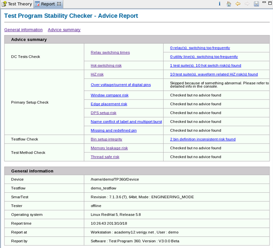
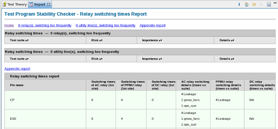

Test Program Stability Checker
Test Program Stability Checker helps you to find out programming risks in your test program, for example, hot-switching, and Hi-Z.
About this task
You can use this tool to check the potential programming risks in your test program.
Before you begin
Make sure:
- You use the "S&S_tools_package" license.
- Your test program is correct.
- The testflow can be executed successfully.
Procedure
-
If you want to customize the options for risk checking, click the
 icon to open a Preference page, on which you can do more configurations about this
risk checking.
icon to open a Preference page, on which you can do more configurations about this
risk checking.
For details, see Preference page on Test Program Stability Checker.
-
If you want to import an existing TP360 profile, click the
 icon.
icon.
-
If you want to export current TP360 profile, click the
 icon.
icon.
Results
An HTML risk report is displayed in the Report view. By default, it is generated in the directory of /tmp/.vda/<host_name>/TPQ/report/.
To save it to a
different directory, click  in the Report view.
in the Report view.

In this report:
- The first two columns list the check items you have selected during the setups.
Opening the hyperlinks in the second column, all risks for the associated item are displayed.

- The third column lists the check results.
The hyperlinks in this column display detailed information about these risks.
Functional changes
- Introduced in SmarTest 7.2.2